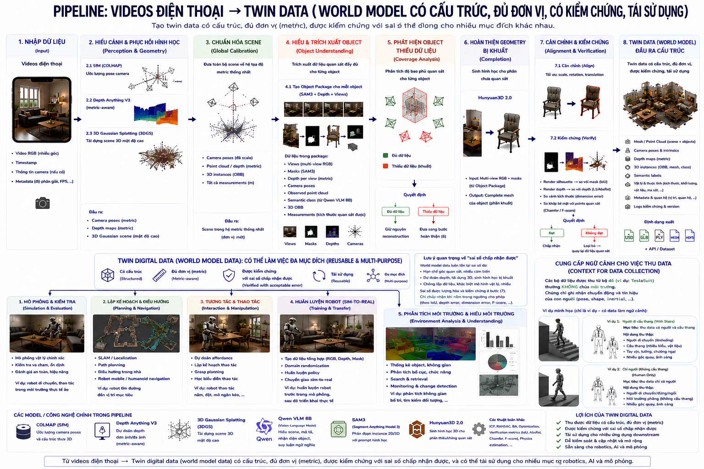
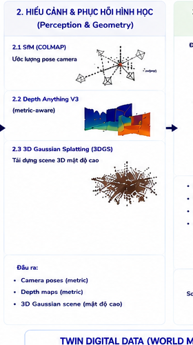
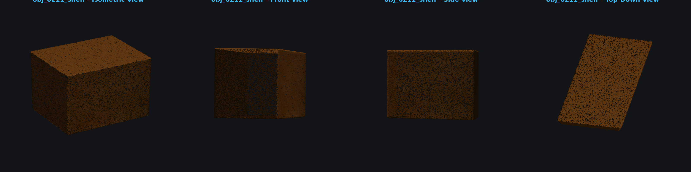
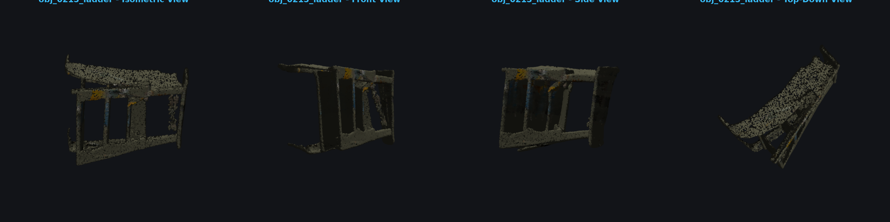

RGB frames
Ví dụ: một video, quay nhiều góc nhìn.
03 · Cách làm

8 bước, y hệt 3 bước vừa nêu, chỉ chi tiết hơn. NEW = bundle hiện tại · OLD = baseline · GAP = chưa đủ artifact xác nhận.
Giữ video, frame order, timestamp, camera metadata để viewpoint change dùng được cho reconstruction.
input_manifest.json machine-readable.SfM phục hồi camera trajectory; Depth Anything 3 ước lượng depth; 3DGS tạo representation render lại được.
Đưa camera, point cloud, depth, object và mesh về cùng một world coordinate và một global scale.
Gom semantic class, mask, depth, camera pose, observed point cloud và 3D OBB thành package riêng cho từng object.

Đo phần object đã quan sát và phần bị khuất. Chỉ object thiếu dữ liệu mới chuyển sang completion.

object_coverage.json dạng số (visible_views, coverage_ratio).Hunyuan3D 2.0 bổ sung geometry chưa quan sát được, ở cấp object — không generate lại toàn bộ scene.
Căn candidate mesh về world coordinate rồi render ngược từ camera thật để so với observation.

verification_report.json với score và threshold tường minh.Đầu ra là một package có cấu trúc — không chỉ một mesh. Downstream dùng chung geometry, camera, object, semantics, quality.

.mp4/.png) để xem trực quan; mesh 3D (.glb/.obj) để load vào game engine hoặc simulator; point cloud (.ply) cho xử lý hình học; file scene robot (.mjcf/.xml) để nạp thẳng vào MuJoCo; và file mô tả (.json) ghi kích thước, vị trí, độ tin cậy của từng vật thể.04 · Kết quả
5 loại file: ảnh/video (.mp4, .png) xem trực quan · mesh (.glb, .obj) load simulator/collision · point cloud (.ply) xử lý hình học · scene robot (.mjcf, .xml) nạp MuJoCo · mô tả (.json) kích thước/vị trí/độ tin cậy.
LiDAR cho hình học chính xác hơn nhưng cần thiết bị scan đắt tiền, khó tiếp cận. Cách này chỉ cần điện thoại.
Dựng tay cho vật thể sạch hơn nhưng tốn hàng tuần nhân công mỗi scene. Cách này tự động, tốn một lần đi bộ quay video.
Mocap ghi chuyển động người nhưng không có hình học môi trường. Twin Digital Data bổ sung đúng phần môi trường đó.
Video thô không đo được, không tách vật thể được. Ở đây có geometry đo được, object-level, kèm nhãn observed/inferred.
Ví dụ: một video, quay nhiều góc nhìn.
852 frames · temporal order.

Trajectory và orientation.
DA3 depth estimate theo view.
Dense scene representation.

Depth evidence nhiều frame.
Scene export trong bundle.

Four views + GLB.

Four views + GLB.

Four views + GLB.

Hunyuan textured preview.

Hunyuan textured preview.
Heading test 270° · 3.49m, upright 0.87.
Coverage evidence.
Render so với ảnh nguồn.